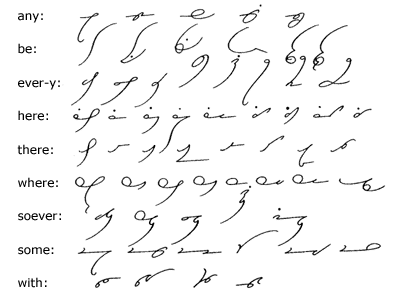
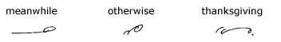
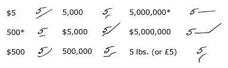
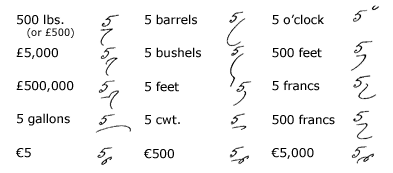
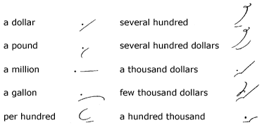
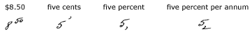
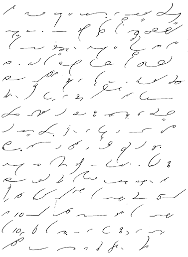

Unit 27
Compound Words
201.
A number of compounds may be obtained by joining
brief forms:

202. Key
to Compound Words
| any: |
anybody, anyone, anywhere, anyhow, anyway. |
| be: |
before, beforehand, behindhand, belong, beside, besides. |
| ever-y: |
whatever, whenever, whichever, however, whoever, everybody,
everyone, everywhere. |
| here: |
hereafter, herein, hereinafter, hereinbefore, hereon, hereto,
heretofore, hereunto, herewith. |
| there: |
thereafter, therein, therefore, therefrom, thereon, thereto,
thereupon, therewith. |
| where: |
whereabouts, whereas, whatever, wherefore, wherein, whereof,
whereon, elsewhere. |
| soever: |
whatsoever, wheresoever, whensoever, whosoever, whomsoever. |
| some: |
somebody, somehow, someone, sometime, somewhat, somewhere. |
| with: |
within, withstand, forthwith, notwithstanding. |
Note: Slight modifications or
omissions are made in the forms for anywhere, anyhow,
hereinafter, herewith, however, sometime,
somewhere, and the compounds beginning with every.
These should receive special attention. The form for
notwithstanding is not-with-s.
203. Irregular
Compounds

Figures, Etc.
204. After
numerals the word dollars is expressed by d;
hundred by n placed under the numeral; thousand
by th; million by m placed on the line
close to the numeral; billion by b; pounds
(weight or money) by p; gallons by g;
barrels by br; bushels by bsh;
feet by f; francs by fr; euros
by eu; cwt. by nw; o'clock
by o placed over the numeral:

*The sign for hundred
is placed beneath the figure to distinguish it positively from
million, which is written beside the figure.

205.
The above signs may be used after the article a and such
words as per, few, and several:

206.
Cents when preceded by dollars may be
expressed by writing the figures representing them very small
and above the numerals for the dollars; when not preceded by dollars,
the sign for s is placed above the figures. Percent
is expressed by s written below the figures; percent
per annum by adding n to percent.

207. Reading
and Dictation Practice

208. Writing
Practice
1. A few thousand dollars will
be needed to begin the repairs on the bridge at Omaha. It is estimated
that the total cost will be about $50,000.
2. Owing to the strike, the goods are coming
through in very poor condition, and many of the shipments must
be refused.
3. A trial of the peculiar device showed that
it was not capable of developing even approximately the power
claimed for it.
4 We are anxious to be invited to the private
view of this new establishment, and especially of its elaborate
and conspicuously beautiful decorations.
5. We are somewhat accustomed to abbreviating
words in writing the English language in longhand. This expedient
is especially applicable and convenient in
writing rapidly. The principle is capable of great development
and offers a ready means of providing easy forms for many long
words that would otherwise require more elaborate and consequently
Less fluent outlines.
6. In the Post Office Guide it is suggested
that in addressing envelopes the name of the state, written on
a line by itself, is more convenient in handling the mail.
7. A peculiar situation has arisen that is
likely to prejudice the development and policy of this financial
institution.
8. The Reverend Mr. Smith took a conspicuously
benevolent attitude toward a policy that was not likely to be
successful.
9. A regular feature of the establishment
was the inauguration of a fashion show each month.
Transcription Key to this
Unit
- Next Unit - |